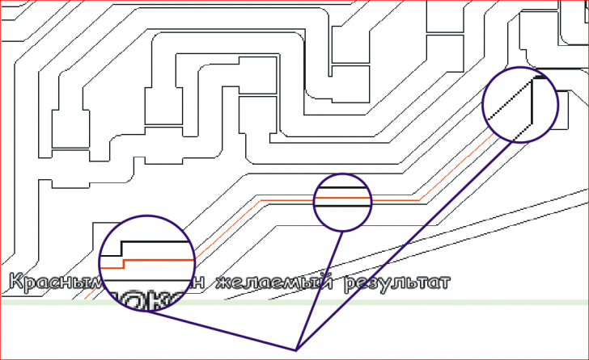
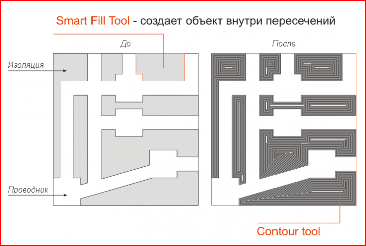
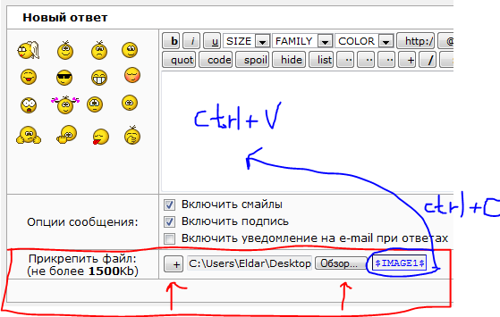

помогите с трассировкой
runningl / 30.01.2010, 17:59/00:41
Форум:
Уважаемые форумчане, нужна ваша помощь. Имеется файл DXF с чертежем топологии печатной платы. Файл предназначен для гравировального станка ЧПУ. Каким образом можно преобразовать файл, чтобы изоляцию проводников делать не двумя проходами фрезы, а одним?
А причем тут трасировка? Покажи наглядно что у тебя есть и то что ты хочешь в виде скриншота!
Не могу разобраться, как прикрепить рисунок.
Добавлено (31.01.2010, 00:42)
---------------------------------------------
Вот по этой ссылке находится скриншот.
Добавлено (31.01.2010, 00:43)
---------------------------------------------
http://savepic.org/259326.htm
Честно говоря не пойму причём тут CorelDRAW.
Так-как толщина изоляции не одного размера, сомневаюсь что у тебя получиться сделать за один проход фрезы.

С помощью Corel Draw, легко готовить файлы для гравировальных станков (где используются сверла), за щет инструмента Contour Tool
Задача состоит в том, чтобы сделать изоляцию одного размера, т.е один проход фрезы будет разделять проводники. То, что при этом получится разная толщина проводников, значения не имеет. Есть такая функция Contour->To center. При ее применении образуется серединная линия проводников. А можно ли оконтурить так, чтобы получить серединную линию изоляции?
Сделай так, чтобы изоляция стала замкнутой, как в проводниках
и используй инструмент Contour, как обычно!
Приблизительно должно получиться что-то вроде этого!

Если нужно изоляция одного размера, тогда смысл схемы?
А можно ли конвертировать чертеж так, чтобы корел принял за "мясо" изоляцию а не проводники?
Предыдущий комментарий!
Смысл в том, что геометрия проводника роль не играет. Достаточно того, что проводник соединяет нужные элементы, и два проводника достаточно разделить одним проходом фрезы. А при гравировке в два раза можно сократить работу. Насколько я понял, Contour->To center создает осевую линию прямоугольника - объекта. В моем случае проводники состоят из объектов. А если бы было возможным изоляцию преобразовать в объекты, то Contour->To center как раз и дал бы желаемый результат.
Добавлено (01.02.2010, 01:56)
---------------------------------------------
Des, прошу прощения за то, что не совсем точно сформулировал задачу.
По этой ссылке более наглядный рисунок http://savepic.org/209970.png
Так и не понял как пркрепить рисунок.
В этой ситуации тебе только Sancho поможет, если напишет макрос, который функцию Convert Outline To Object, сделает так, чтобы работала в обратном порядке Convert Object To Outline, (Меня тоже заинтересовал этот макрос)!
Чтобы изоляцию преобразовать в объект, автоматом это не выйдет, только вручную, с помощью инструмента Smart Fill Tool.
Для того чтобы прикреплять файлы!

Страницы